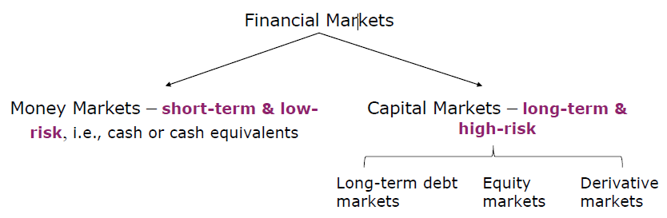

Study Note for 24Q2 AppFin704
Last Updated: 2024-06-06
Lecture 1 Investments and Securities Markets
•describe differences among asset classes and construction of stock market indexes, and calculate profit/loss on options/futures investments.
•describe how firms issue securities, and identify types of investors’ orders
•compare mechanics and implications of buying on margin & short selling
•cite pros/cons of investing with an investment company, and contrast open end mutual funds with other types of investment companies.
•define net asset value (NAV) and measure the rate of return on a mutual fund, and classify mutual funds according to investment style.
•demonstrate the impact of expenses and turnover on fund performance
1.1 Asset Classes and Financial Instruments

1.1.1 Money Markets
- Treasury bills
- Certificates of Deposits (Term Deposits)
- Commercial Paper(CP) (short term < 12month unsecured debts)
- Bankers Acceptances (a postdated check, A bank, rather than an account holder, guarantees the payment.)
- Eurodollars (U.S. dollar denominated deposits at foreign banks or foreign branches of U.S. banks)
- Repurchase Agreements (Repos or RPs) and Reverse Repos.
- Others, e.g., Brokers’ Calls (interests charged by banks on loans made to brokerage firms), Federal Funds, The LIBOR Market, and Money Market Funds
1.1.2 The Bond Market
- Treasury Notes/Bonds ($21 billion, $21/$51= 41% of 2020 US Bond Market)
- Mortgages and Mortgage Backed Securities ($12.7 billion, 25%
- Corporate Bonds, including secured bonds, debentures (unsecured), callable/puttable/convertible bonds ($10.6 billion, 21%
- Municipal Bonds (Issued by states/local, tax exempt) ($3.95 billion, 7.8%)
- Federal Agency Debt, e.g., Fannie Mae, Freddie Mac ( 3.3%)
- International Bonds
- Eurobonds: Eurodollar bonds bonds denominated in a currency other than the issuer’s currency
- Yankee bond: US dollar denominated bond sold in the U.S. by a non U.S. issuer
- Inflation Protected Bonds (i.e., principal is adjusted per CPI)
1.1.3 The Equity Market
- Common stocks
- Preferred stocks (pay preferred dividends, behaving like bond)
- Depository receipts, (shares in a foreign company)
- ADR American Depository Receipt
- CRD Chinese Depository receipt
- Reduced currency and foreign operation cost
1.1.4 Market Indexes
- Broad based index (S&P 500 etc.)
- Narrow based index (composed of only a few stocks, in a specific industry)
- Why indexes?
- Provide performance benchmarks
- Base of derivatives
- Smart beta
The goal of Smart beta is to obtain alpha, lower risk or increase diversification at a cost lower than traditional active management and marginally higher than straight index investing
Construction Methodology
- Price weighted (DJIA) 1 share per firm
- Market value weighted (S&P500, NASDAQ)
- Equal weighted (simple average of returns)
1.1.5 Derivative Markets
- A security with a pay-off that depends on the prices of other securities
- Call/put options
- Futures/Forwards
- Swaps, futures options, etc.
Why we need them?
- Speculative
- Hedging
- Arbitraging (to lock in price)
Arbitrage describes the act of buying a security in one market and simultaneously selling it in another market at a higher price, thereby enabling investors to profit from the temporary difference in cost per share.
1.2 Securities Markets and Trading
Originators
- Publicly traded companies initial public offering (IPO), and seasonal equity offerings (SEOs), - Privately held firms (private placement in which shares are sold directly to a small group of institutional or wealthy investors)
- Shelf registrations (public firms can register securities and gradually sell them to the public )
How securities are traded (in secondary markets)
- Direct search (e.g. painting)
- Brokered
- Dealer
- Auctions
ype of orders maket order price contingeant order
Trading mechanisms OTC dealer electronic market maker (increase liquidity) – Over the counter dealer markets (OTC Markets) - Electronic communication networks ( ECNs)
margin trading
why to purchase with margin?
able to make more profits by borrowing money from broker, essentially multiplying market fluctuation/volatility.
short sale (borrow stocks to sell and payback when you sold it at profit)
derivative market (sell, not borrowing)
1.3 Market Participants
1.3.1 Investment company
- Intermediary that invest for investors
- Record and admin
- professional management
- Lower transaction cost by volume
Net Asset Value (NAV)
\[\frac{Asset - Liabilities}{share outstanding}\] unit investement fund (unmanaged) fixed portfolio for life
Managed Investment companies - open-end(publicly trader and closed ended) - close end funds shares sold at discount for liquidity (to sell quickly)
Exchange Traded Funds (ETF)
Can be continuously traded like stocks
Other Comingled Funds, Real Estate Investment Trusts, Hedged Funds
Mutual Funds 65% of market
- Money market
- equity funds (income vs growth)
- specialised
- bond
- index funds
- Funds of Funds
Funds can be sold directly, indirectly and through financial supermarkets
Fee structure
- Operating expense
- front end load
- back end load
- 12b-1 charges annual fee fro marketing and distribution
fee structure is very important and made large apart of your profit share
Taxation
no tax at fund level long term capital gain tax rate high turnover rate
ETF - Passive investement, track index - lower cost - smart beta fund
- Bid ask spread (depend on demand)
- Index price depart from NAV
mutual fund underperformed passive funds(cost of high freq trading)
consistent performance, don’t be obsessed with top performer, they could be winner by chance